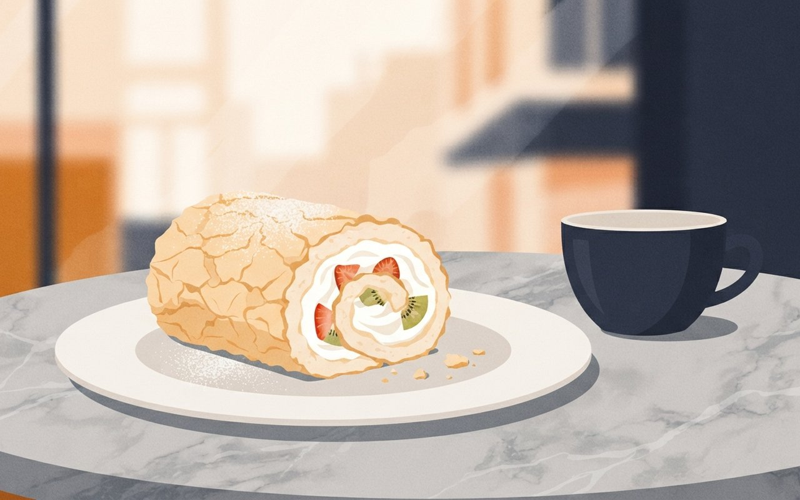
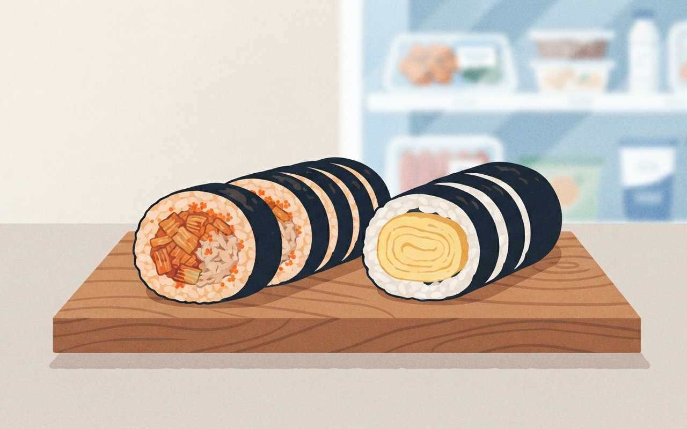
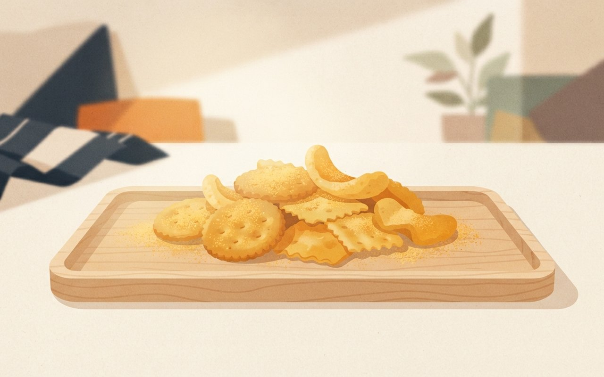
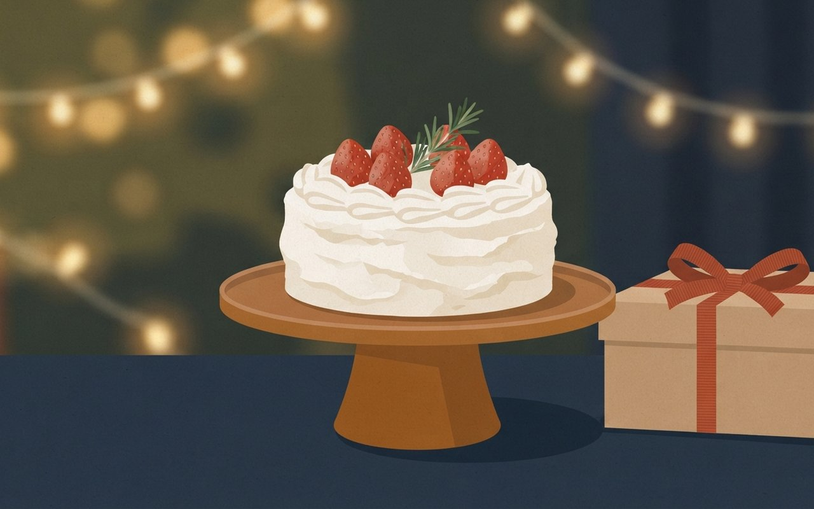
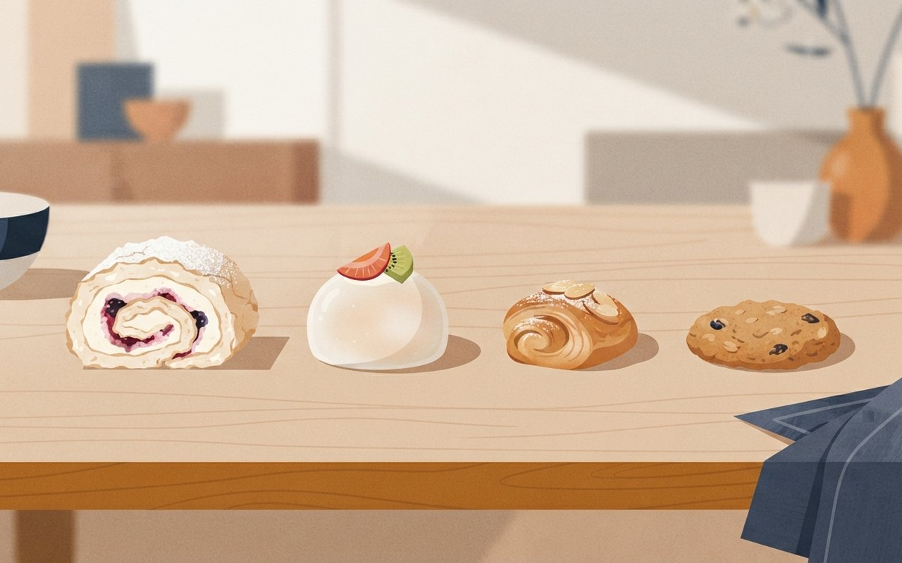

🎧 낭독 원고 보기
11월 26일 목요일, 푸드 브리프입니다.
과일 찹쌀떡 다음으로 줄 서는 디저트는 머랭롤입니다. 머랭 시트에 생크림과 과일을 넣고 만 케이크로, 자를 때 눈 밟는 소리가 나는 영상이 SNS에서 퍼졌습니다. 지난 20일 서울 가로수길 새들러하우스는 평균 대기가 2~3시간이었고, 동대문역사문화공원역 근처 러시아케익은 문을 연 지 3시간 안에 동납니다. 네이버 데이터랩 검색 관심도는 3주 전보다 4.5배로 뛰었습니다. 가격은 기사에 나오지 않았습니다.
편의점에선 김밥이 뜹니다. GS25가 부산 김밥집 식물원김밥과 함께 내놓은 김밥 2종이 한 달 만에 100만 개를 넘었습니다. 가격은 3,700원과 3,900원이고, 앱 사전예약 500개는 10분 만에 다 팔렸습니다. 매출의 66%가 여성이라, 남성이 61%인 GS25 김밥 전체와는 반대입니다.
황치즈 맛도 다시 돌아왔습니다. 뉴스1에 따르면 CU 황치즈픽은 출시 2주 만에 3만 개가 팔렸고, 황치즈 매출은 작년 같은 때보다 GS25가 22배, 세븐일레븐이 8배입니다.
크리스마스 케이크는 사전예약가만으로 정가보다 최대 약 23% 쌉니다. 투썸 크림탑 스초생은 4만 2천 원에서 3만 7,800원, 뚜레쥬르 퀸 케이크는 3만 8천 원에서 3만 400원이고, 멤버십 쿠폰까지 쓰면 2만 7,400원입니다. 투썸은 예약 고객의 73%가 크리스마스이브와 당일을 수령일로 골랐다고 밝혔습니다.
마지막으로 올해 화제가 된 디저트는 두쫀쿠부터 머랭롤까지 8종 이상입니다. GS25는 간식 유행 주기가 약 1년에서 3~4개월로 줄었다고 봤습니다.
지금까지 푸드 브리프였습니다. 가격과 판매 조건은 바뀔 수 있으니 방문과 주문 전에 매장과 앱 안내를 확인해 주세요.
卷
디저트 오픈런
과일 찹쌀떡 다음은 머랭롤 — 가로수길 새들러하우스 평균 대기 2~3시간, 동대문 러시아케익은 개점 3시간 안에 동나
달걀흰자와 설탕으로 만든 머랭 시트에 생크림과 과일을 넣고 만 케이크 '머랭롤'이 줄 서는 디저트로 떠올랐다. 과일 찹쌀떡 이후의 새 유행이다. 자를 때 눈 밟는 듯한 소리가 나는 ASMR 영상이 SNS에서 퍼지면서다(한국경제 11/25).
20일 서울 가로수길 디저트 전문점 새들러하우스는 평균 대기 시간이 2~3시간이었고, 동대문역사문화공원역 인근 러시아케익은 개점 후 3시간 안에 머랭롤이 동난다. 네이버 데이터랩 검색 관심도는 23일 기준 3주 전보다 4.5배로 뛰었고 최근 사흘 새 40%가량 올랐다(한국경제 11/25). 다른 한국경제 기사는 서울 중구의 한 러시아 디저트 전문점이 정오에 문을 열어 평일 오후 3시 전후 품절되고, 강남의 한 디저트 전문점은 1인 1개로 구매를 묶었다고 전했다(한국경제 11/22).
- 새들러하우스서울 가로수길 · 11/20 평균 대기 2~3시간
- 러시아케익동대문역사문화공원역 인근 · 개점 후 3시간 안에 품절
- 검색 관심도네이버 데이터랩 · 11/23 기준 3주 전의 4.5배 · 최근 사흘 약 40%↑ · 11/14 19 → 11/18 100(최고치 = 100)
- 가격기사에 없음
- 확인⚠ 방문 전 확인 — 개점·품절 시각과 판매 수량은 바뀔 수 있음
🍜 알고 보면 달라지는 것
머랭롤은 '줄'보다 '시간'이 문제다. 품절이 오후 3시 전후라는 보도가 있어 오후에 가면 문 닫힌 가게를 볼 수 있다 — 기자가 찾은 날 오후 3시께에도 이미 닫혀 있었다(한국경제 11/22). 이 기사의 '중구 러시아 디저트 전문점'이 러시아케익과 같은 곳인지는 기사에 나오지 않는다. 데이터랩 숫자는 검색 건수가 아니라 기간 중 최고치를 100으로 둔 관심도다.
한국경제 — 머랭롤 대기·데이터랩 4.5배 한국경제 — 오픈런·품절 시각
매장 이름·대기 2~3시간·3시간 안 품절·4.5배·40%는 한국경제(11/25 07:00) 단일 · 정오 개점·오후 3시 전후 품절·1인 1개·데이터랩 19→100은 한국경제(11/22 17:00) · 두 기사 모두 한국경제라 다른 매체로 교차 확인하지 못함 · 가격·영업시간은 기사에 없음 (확인 2026-11-26)
찹쌀떡 다음은 머랭롤,
가로수길 줄 2~3시간
자를 때 눈 밟는 소리가 나는 영상으로 뜬 케이크예요. 동대문 러시아케익은 문 연 지 3시간 안에 동나서 늦게 가면 못 살 수 있어요.
40%|최근 사흘 검색 관심도 상승
A rolled meringue cake with a crisp pale golden crust, cut open to show a swirl of whipped cream and fresh strawberry and kiwi pieces, a few crumbs on a plain white plate, soft winter morning light on a marble cafe table, no people, no text, no logos, no packaging

飯
GS25 협업
부산 '식물원김밥' 편의점판 한 달 새 100만 개 — GS25 김밥 2종, 여성 매출 66%·재구매율은 일반 김밥의 2배
GS25가 부산 김밥집 '식물원김밥'과 함께 지난달 내놓은 김밥 2종이 출시 한 달 만에 누적 100만 개를 넘었다(뉴시스·뉴스1). 식물원김밥은 다비치 강민경이 지난해 유튜브 채널에서 소개해 입소문을 탄 곳이다(뉴시스).
날치알묵은지참치김밥은 3,700원, 명란통계란김밥은 3,900원이다. 명란통계란김밥 우리동네GS 앱 사전예약 500개는 10분 만에 다 팔렸다(뉴시스). 매출의 66%가 여성이고 20~30대가 64%를 차지했으며, 재구매율은 일반 김밥 상품 평균의 약 2배다(뉴시스·뉴스1). GS25 김밥 전체로는 남성 매출이 61%다(뉴시스).
- 제품·가격날치알묵은지참치김밥 3,700원 · 명란통계란김밥 3,900원 ⚠ 변동 가능
- 판매10월 출시 · 한 달 만에 누적 100만 개 이상
- 사전예약명란통계란김밥 앱 사전예약 500개 10분 만에 완판
- 누가 샀나여성 66%(GS25 김밥 전체는 남성 61%) · 20~30대 64%
- 재구매율일반 김밥 상품 평균의 약 2배
🍜 알고 보면 달라지는 것
편의점 김밥은 원래 남성이 더 많이 사는 상품인데(남성 61%), 이 김밥은 여성이 66%로 뒤집혔다. GS25는 SNS 입소문이 젊은 층의 관심을 끌었다고 봤다. 부산까지 가지 않아도 동네 GS25에서 살 수 있다는 점이 이 숫자의 배경이다 — 다만 점포별 재고는 기사에 없다.
뉴시스 — 식물원 김밥 100만 개·가격 뉴스1 — 식물원 김밥 매출 구성
100만 개·여성 66%·20~30대 64%·재구매율 2배는 뉴시스(11/26 09:33)·뉴스1(11/26 08:52) 일치(뉴스1은 요약문만 확인) · 남성 61%·가격·사전예약 500개 10분·강민경 소개는 뉴시스 단일 · 점포별 재고는 기사에 없음 (확인 2026-11-26)
유튜브 김밥집 편의점판,
한 달 새 100만 개
GS25가 부산 식물원김밥과 만든 2종이에요. 3,700원과 3,900원이고, 앱 사전예약 500개는 10분 만에 다 팔렸어요.
66|여성 매출 비중|GS25 김밥 전체는 남성 61%
Two rolls of Korean gimbap sliced on a simple wooden board, one with tuna and chopped aged kimchi and tiny orange fish roe, the other with a thick rolled omelet center, a bright convenience-store style fridge shelf softly blurred in the background, no people, no text, no logos, no brand packaging

黃
편의점 3사
편의점에 다시 '황치즈' — CU 황치즈픽 2주 만에 3만 개, 황치즈 매출 GS25 22배·세븐일레븐 8배(전년 동기 대비)
뉴스1에 따르면 CU가 이달 4일 업계 단독으로 내놓은 '황치즈픽'은 출시 2주 만에 3만 개가 팔렸다. 황치즈 매출은 전년 동기 대비 GS25가 22배, 세븐일레븐이 8배로 늘었다(뉴스1).
황치즈 맛은 빵·케이크를 넘어 스낵·쿠키·안주까지 번지고 있고, 업계는 단맛과 짠맛을 함께 내세워 디저트 수요를 노리고 있다(뉴스1).
- CU황치즈픽 · 11/4 업계 단독 출시 · 2주 만에 3만 개 판매
- GS25황치즈 매출 전년 동기 대비 22배
- 세븐일레븐황치즈 매출 전년 동기 대비 8배
- 가격기사에 없음
🍜 알고 보면 달라지는 것
'22배'와 '8배'는 판매 개수가 아니라 매출이고, 두 회사가 어느 기간을 견줬는지는 확인한 본문에 나오지 않는다. 그래서 GS25가 세븐일레븐보다 더 많이 팔았다는 뜻으로 읽으면 안 된다 — 작년 같은 때보다 두 곳 모두 크게 늘었다는 정도가 기사로 확인되는 사실이다.
뉴스1 — 편의점 황치즈 열풍
뉴스1(11/25 06:40) 단일 출처 — 다른 매체에서 같은 수치를 찾지 못함 · 집계 기간·가격은 확인한 본문에 없음 (확인 2026-11-26)
편의점에 다시 황치즈,
빵 넘어 과자·안주까지
CU 황치즈픽은 출시 2주 만에 3만 개가 팔렸어요. 황치즈 매출은 작년 같은 때보다 GS25가 22배, 세븐일레븐이 8배로 늘었어요.
3만 개|CU 황치즈픽 출시 2주 판매
A small pile of golden-yellow cheese-flavored cookies and snack chips on a light wooden tray, a dusting of yellow cheese powder, warm cozy lighting, no people, no text, no logos, no packaging, no brand names

糕
케이크 예약
크리스마스 케이크 사전예약가 — 투썸 크림탑 스초생 3만 7,800원·뚜레쥬르 3만 400원, 예약가만으로 정가보다 최대 약 23% 싸
지디넷코리아가 정리한 브랜드별 크리스마스 케이크 가격에서 사전예약가만 보면 브랜드에 따라 정가보다 최대 23% 싸다. 뚜레쥬르처럼 멤버십 쿠폰을 더하면 할인 폭이 더 커지는 곳도 있다. 투썸플레이스 '크림탑 스초생'은 정가 4만 2,000원에서 10% 내린 3만 7,800원, '스초생'은 3만 9,000원에서 3만 5,100원이다.
뚜레쥬르 '홀리데이 스트로베리 퀸·블랙 퀸'은 3만 8,000원에서 20% 내린 3만 400원(멤버십 쿠폰을 쓰면 2만 7,400원), 스타벅스 '헬로키티 초코 트리바움쿠헨'은 3만 9,000원에서 10% 내린 3만 5,100원, 배스킨라빈스 '팡팡 홀리데이'는 3만 1,000원에서 2만 3,900원이다. 할인 조건은 예약 채널과 멤버십 가입 여부에 따라 달라진다(지디넷코리아).
- 투썸플레이스크림탑 스초생 4만 2,000원 → 3만 7,800원(10%) · 스초생 3만 9,000원 → 3만 5,100원
- 뚜레쥬르스트로베리 퀸·블랙 퀸 3만 8,000원 → 3만 400원(20%) · 멤버십 쿠폰 시 2만 7,400원
- 스타벅스헬로키티 초코 트리바움쿠헨 3만 9,000원 → 3만 5,100원(10%)
- 배스킨라빈스팡팡 홀리데이 3만 1,000원 → 2만 3,900원(약 23%)
- 확인⚠ 변동 가능 · 예약 기간·수령일은 각 브랜드 앱 확인(기사에 없음)
🍜 알고 보면 달라지는 것
투썸은 예약 고객의 73%가 크리스마스이브와 당일을 수령일로 골랐다고 밝혔다(기사 맥락상 지난 시즌). 24·25일 매장 수령이 몰린다는 뜻이라, 할인만큼 수령일을 미리 잡는 게 중요하다. 같은 '할인'이라도 뚜레쥬르처럼 멤버십 쿠폰을 겹쳐야 최저가가 되는 곳이 있다.
지디넷코리아 — 크리스마스 케이크 가격 비교
가격·할인율·최대 23%·투썸 73%(기사 맥락상 지난 시즌)는 지디넷코리아(11/21 09:00) 단일 · 스초생·배스킨라빈스 할인율은 정가·예약가로 계산한 값(약 10%·약 23%) · 예약 기간·수령 기간은 기사에 없음 · 파리바게뜨·배스킨라빈스·팀홀튼 예약 일정은 11/19 푸드 브리프에서 다룸 (확인 2026-11-26)
크리스마스 케이크,
예약가 먼저 비교하세요
투썸 크림탑 스초생은 3만 7,800원, 뚜레쥬르 퀸 케이크는 3만 400원이에요. 투썸은 지난 시즌 예약 고객 73%가 이브·당일 수령을 골랐대요.
배스킨라빈스 팡팡 홀리데이:23|뚜레쥬르 퀸 케이크:20|투썸 크림탑 스초생:10|스타벅스 바움쿠헨:10
정가 대비 사전예약 할인율(%) / 배스킨라빈스는 계산값
A round Christmas cake with white whipped cream, fresh strawberries and a small sprig of green rosemary on top, placed on a cake stand beside a plain kraft gift box with a red ribbon, soft warm string-light bokeh in the background, no people, no text, no logos, no characters

潮
디저트 흐름
올해 화제 디저트 8종 이상 — 두쫀쿠에서 머랭롤까지, 간식 유행 주기 1년에서 3~4개월로(GS25 분석)
한국경제에 따르면 올해 화제에 오른 디저트는 8종 이상이다. 1~2월 두쫀쿠, 3월 상하이 버터떡, 3월 말 호박인절미, 4월 우베, 5~6월 양즈깐루, 8~9월 피자설기, 9~10월 과일 찹쌀떡에 이어 11월 머랭롤이 떠올랐다.
GS25는 간식류 유행 주기가 과거 약 1년에서 최근 3~4개월로 줄었다고 분석했다. 엠브레인 조사에서는 응답자의 79%가 "디저트 유행이 지나치게 빨리 바뀐다"고 답했다(한국경제).
- 올해 흐름두쫀쿠(1~2월) → 상하이 버터떡(3월) → 호박인절미(3월 말) → 우베(4월) → 양즈깐루(5~6월) → 피자설기(8~9월) → 과일 찹쌀떡(9~10월) → 머랭롤(11월)
- 유행 주기약 1년 → 3~4개월 (GS25 분석)
- 소비자 반응79% "디저트 유행이 지나치게 빨리 바뀐다" (엠브레인 · 조사 대상·시기는 기사에 없음)
🍜 알고 보면 달라지는 것
유행 주기가 3~4개월이면 한 디저트가 뜨고 편의점·프랜차이즈 판이 나올 즈음 다음 유행이 시작된다는 뜻이다. 오늘 1번 카드의 머랭롤이 이 목록의 맨 끝이다. 조사 대상·시기가 기사에 없어 79%는 참고 수치로만 읽는 게 맞다.
한국경제 — 올해 디저트 유행·유행 주기
디저트 목록·8종 이상·GS25 유행 주기 분석·엠브레인 79%는 한국경제(11/25 07:00) 단일 · 엠브레인 조사 대상·시기는 기사에 없음 (확인 2026-11-26)
디저트 유행 주기,
1년에서 3~4개월로
올해 화제가 된 디저트가 두쫀쿠부터 머랭롤까지 8종 이상이에요. GS25는 간식 유행 주기가 약 1년에서 3~4개월로 줄었다고 봤어요.
1~2월 두쫀쿠|3월 버터떡|5~6월 양즈깐루|9~10월 찹쌀떡|11월 머랭롤
A row of small assorted desserts on a long light wooden table, a rolled meringue cake slice, a round fruit rice cake, a small pastry and a cookie arranged left to right, soft daylight, no people, no text, no logos, no packaging

79%|"유행이 지나치게 빨리 바뀐다"